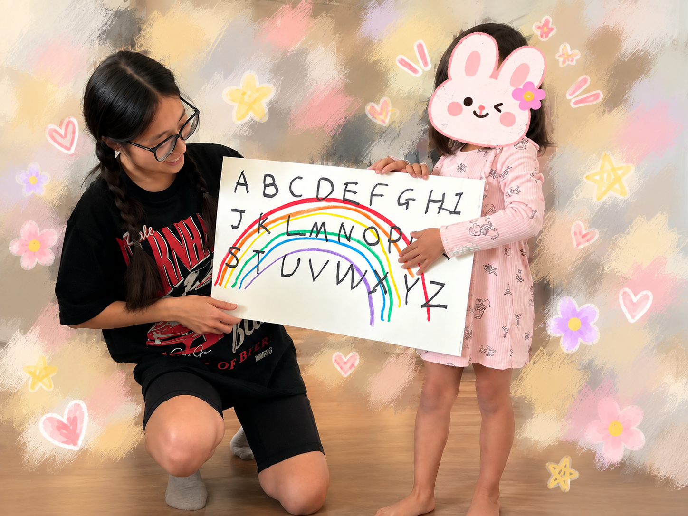
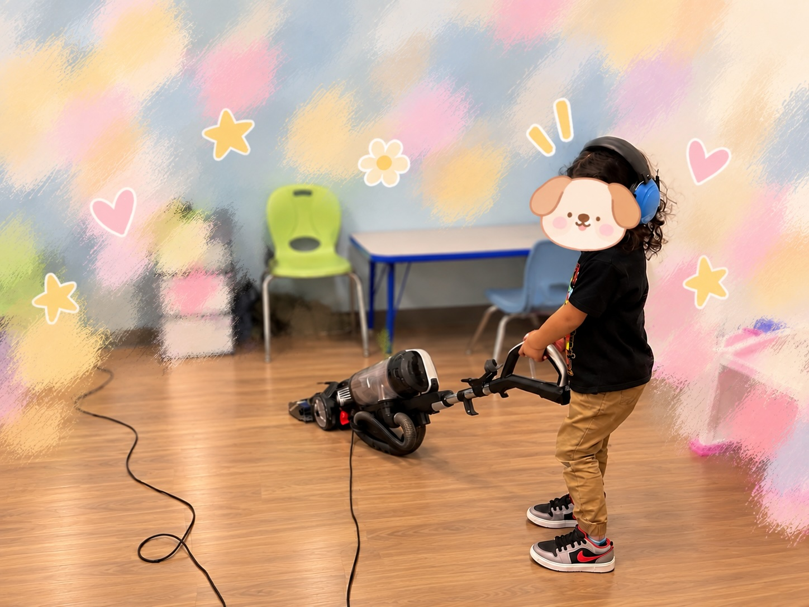
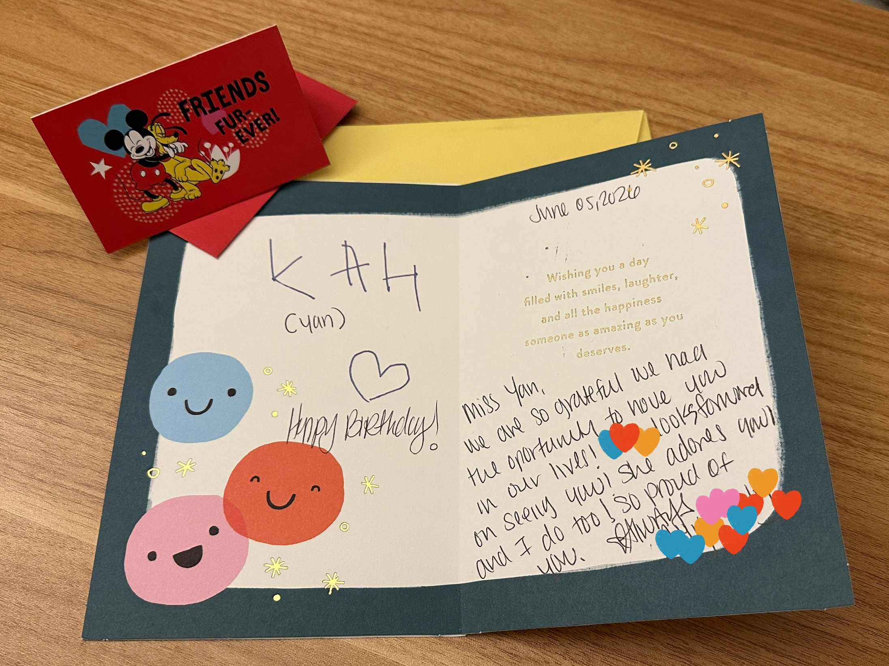

I am interested in how meaningful behavior
change can be supported in everyday life.
I keep coming back to a simple observation:
what people know, want, or are capable of doing
does not always become what they actually do.
Across research, behavioral practice, and my own
attempts to build behavioral services, I have
become interested in what happens between
intention and sustained action. How do conditions
around a person make change easier or harder?
How can behavioral data help us recognize when
support is needed? And how can that support adapt
as people, circumstances, and goals change?
I am still exploring the populations and settings
in which I want to pursue these questions.
What has remained consistent is my interest in
using behavioral science, data, and real-world
intervention to understand
not only why behavior changes, but how
meaningful change can be supported over time.
My interests did not begin with a single population
or research method. They developed through different
ways of encountering the same problem: understanding
behavior is one challenge, helping change work in
everyday life is another.
01 · PSYCHOLOGY
I started by asking why behavior differs.
Psychology introduced me to behavior as the
product of more than a single trait or decision.
Learning history, development, individual
differences, and environment all contribute to
how people respond and change.
It gave me the theoretical foundation for asking
why the same situation can produce different
behavior across people, and why the same person
may behave differently as conditions change.
02 · BEHAVIORAL DATA SCIENCE
Data gave me tools to study that variation.
Graduate training in behavioral data science gave
me statistical, computational, and visualization
tools to study behavior across people, time, and
situations.
Working with longitudinal and complex behavioral
data taught me to move from observing that
behavior varies to asking how that variation can
be measured, modeled, and eventually made useful.
I became especially interested in what accumulated
behavioral data can tell us about
what should happen next.
03 · PRACTICE
Practice made the cost of behavior change visible.
Working directly with children and families showed
me that knowing what someone can do is not enough
to predict what they will do.
Prompts, reinforcement, competing demands,
available support, prior experiences, the
environment, and the person's state in that moment
can all affect whether a behavior occurs.
It also taught me something harder to capture in a
model: an intervention can be technically sound and
still ask too much of the person expected to carry
it into everyday life.
04 · BUILDING
Trying to build a service made implementation
part of the question.
I founded Nudge Behavior Data Science LLC and
explored a cross-border behavioral service model
with collaborators in China.
The experience pushed me beyond asking whether an
intervention could work. I had to think about
whether a model could actually operate within a
different healthcare system, market, culture,
cost structure, and level of public awareness.
Rather than simply reproduce an existing ABA
service model, I became more interested in a
broader problem:
How do we design behavioral support that fits
the system and the people it is meant to serve?
Research & Data
Questions That Have Shaped My Thinking
My research experiences span different behavioral
domains. I see them less as separate topics than as
different opportunities to learn how behavior can be
measured, modeled, and understood in everyday life.
Independent Research · 2026–Present
When does having a strategy become using it?
I am using daily behavioral data to study
protective behavioral strategies during real-world
drinking occasions.
The project began with a distinction I found
increasingly important: having access to a strategy
is not the same as implementing it when it matters.
Studying repeated observations within the same
individuals has allowed me to ask not only who
differs from whom, but also what changes from one
occasion to another.
What it made me ask next
What conditions help turn behavioral capacity
into action, and what happens when those
conditions change?
R · Longitudinal Data · Multilevel Models ·
Ordinal Models
Addiction Research · 2024
What disappears when we reduce behavior to an
average?
Working with intensive longitudinal alcohol-use
data showed me how much variation can occur within
the same person across days and situations.
That experience strengthened my interest in
studying behavior at the level of moments and
contexts rather than assuming that a person's
average adequately represents how they behave.
What it made me ask next
If behavior changes within the same person,
can support change with it?
Ecological Momentary Assessment ·
Intensive Longitudinal Data
Graduate Capstone · 2023
Why does access not guarantee engagement?
I studied patterns of engagement with a digital
mindfulness intervention using process-mining
methods.
The project introduced me to a problem that extends
well beyond digital interventions: making a
resource available is different from creating the
conditions under which someone actually uses it.
What it made me ask next
Can behavioral systems learn from patterns of
engagement and respond differently over time?
Python · Process Mining · Digital Behavioral Data
Collaborative Research · 2023–2024
How does measurement shape the behavior we think
we see?
Working with behavioral and survey data taught me
how many analytical decisions occur between lived
behavior and the variables that eventually enter
a statistical model.
It made measurement itself part of the question.
How we represent behavior in data affects the
patterns we can detect and the conclusions we can
draw.
What it made me ask next
How do we preserve what matters about behavior
while turning it into data we can actually use?
R · Data Cleaning · Statistical Modeling ·
Behavioral Measurement
How I Think
From Behavior to Better Decisions
Data become valuable when they help us decide
what to do next.
Behavior leaves information behind. A completed
action, a missed goal, a repeated pattern, a change
in engagement, or a moment when an intervention stops
working can all become information about what may need
to change.
I am interested in the feedback loop between behavior,
data, and intervention.
01 · Behavior
What is actually happening?
Observe behavior across people,
situations, and time.
02 · Data
What can we learn?
Measure patterns, variation, trajectories,
and possible conditions associated with change.
03 · Decision
What should happen next?
Determine whether support is needed and which
conditions may be meaningful and modifiable.
04 · Support
What can we change?
Adjust the plan, environment, timing, prompts,
resources, or other intervention components.
05 · New Behavior
What happened next?
Measure again. Learn again. Adapt again.
What works, for whom, when, and what should happen next?
The goal is not simply to predict behavior more
accurately. It is to use what we learn to make the
next decision more useful.
Human-Centered Practice
The Human Side of Behavior Change
Behind every behavioral measure is a person.
Data can tell us whether a behavior occurred, how
often it happened, and how it changed over time.
But behavioral change is experienced before it is
measured.
Working directly with children and families taught me
to pay attention to the parts of progress that do not
fit neatly into a dataset: confidence, hesitation,
trust, effort, connection, and the meaning that a
small change can have in someone's everyday life.
Those experiences continue to remind me why the
outcome of behavioral research should never be
separated from the people expected to live with it.

Little Steps
From first learning to trace letters to making it
all the way from A to Z in less than two weeks.
A small milestone we were happy to celebrate
together.

Choosing to Try
Watching hesitation turn into curiosity, and
curiosity into a choice to try. A small reminder
that approaching something once avoided can begin
simply with feeling ready to try.

The Human Side
Data can capture progress, but not everything that
grows along the way: the trust, the connection,
and the little ways we become part of each other's
lives.
What I Hope to Build Toward
Support that learns from behavior
I want to understand behavior well enough to
support change that can live outside the research
setting.
I am interested in the possibility of behavioral
support that does more than deliver the same
intervention to everyone.
People differ. Circumstances change. Goals evolve.
An intervention that works today may need to look
different tomorrow.
My long-term interest is in bringing together
behavioral science, longitudinal data, and
adaptive intervention
to help people pursue personally meaningful goals
within evidence-based and ethical boundaries.
That could take different forms across health,
learning, treatment, and personal development.
The goal belongs to the person.
The science helps make change more achievable.
Looking further ahead
I am also interested in what sustained behavioral
change may mean beyond the behavior itself.
Over time, I hope to better understand how repeated
behavior and intervention interact with psychological
and physiological adaptation, and potentially with
neural plasticity.
I see this as an area I want to grow into through
further scientific training rather than one in
which I already claim specialized expertise.
Understand behavior carefully.
Learn from the data it generates.
Use that knowledge to build support that works
in real life.
A direction, not a fixed population or a finished
research agenda.
I am looking for doctoral training that will challenge
how I think about behavior, strengthen the methods I use
to study it, and give me opportunities to design and test
interventions in the settings where change actually has
to last. I do not yet know exactly which population,
technology, or intervention will become the center of that
work. That openness is intentional. I want the specific
questions to grow from the science, the people, the
problems worth solving, and the collaborators with whom
I have the opportunity to work.
CV & Contact
Yan Zhu
Behavioral Science · Data · Practice
M.S. Psychology
Data Science in Human Behavior
University of Wisconsin–Madison
B.S. Psychology with Honor
Michigan State University